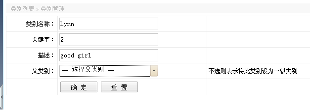
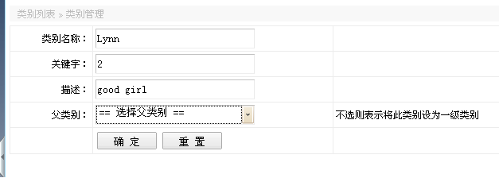

分类管理
分类管理是对产品的类别进行管理，有增删改操作，需要配置操作权限。
添加类别，需要填写类别名称，父类别可选可不选，不选则表示将此类别设为一级类别，暂时系统只支持二级类别。

点击确定后返回列表，若该类别没有父类别，则代表本身已是一级类别，如下图类别名称，类别ID1和2是一级类别。其它是二级类别，第二列父类别是它们归属的类别(即一级类别)。

分类管理是对产品的类别进行管理，有增删改操作，需要配置操作权限。
添加类别，需要填写类别名称，父类别可选可不选，不选则表示将此类别设为一级类别，暂时系统只支持二级类别。

点击确定后返回列表，若该类别没有父类别，则代表本身已是一级类别，如下图类别名称，类别ID1和2是一级类别。其它是二级类别，第二列父类别是它们归属的类别(即一级类别)。